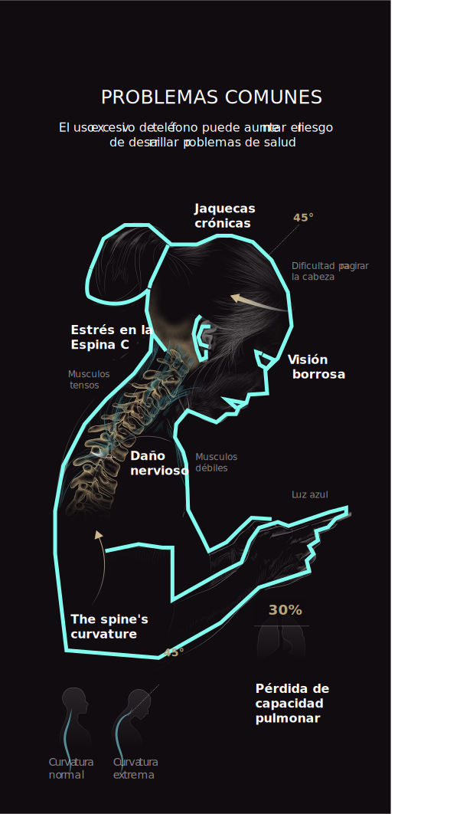

Sofía Sánchez
24 de mayo, 2021
La mayoría de nosotros nos encorvamos sobre nuestro teléfono inteligente durante al menos dos horas al día. Esto puede aumentar efectivamente el peso de su cabeza hasta en 27 kg, dañar su postura y, si envía mensajes de texto mientras camina, lo expondrá a todo tipo de accidentes.
Se espera que el número de usuarios de teléfonos móviles en todo el mundo supere los 5 mil millones este año. Se prevé que la penetración móvil siga creciendo hasta en un 67%, con China en el objetivo de contribuir con 1.500 millones de conexiones móviles e India con 1.100 millones. El aumento en el crecimiento del mercado móvil se puede atribuir principalmente a la reducción del costo y la disponibilidad de los teléfonos inteligentes.

Los teléfonos móviles ahora se consideran generalmente esenciales para nuestra vida diaria, y los mensajes de texto son la forma más común de comunicación. Groupe Spéciale Mobile Association (GSMA) estima que dos tercios de la población mundial poseen un teléfono móvil. En enero de 2018, al menos el 68% de la población mundial tenía acceso a un dispositivo. Se espera que esa cifra alcance el 75% en 2020.
Recomendaciones
Los especialistas en la columna vertebral sugieren que sostenga el teléfono a la altura de los ojos, que descanse regularmente los mensajes de texto y limite el tiempo de pantalla para evitar el dolor. Hay aplicaciones disponibles para enviar alertas cuando el usuario ha estado en una postura mirando hacia abajo durante demasiado tiempo.